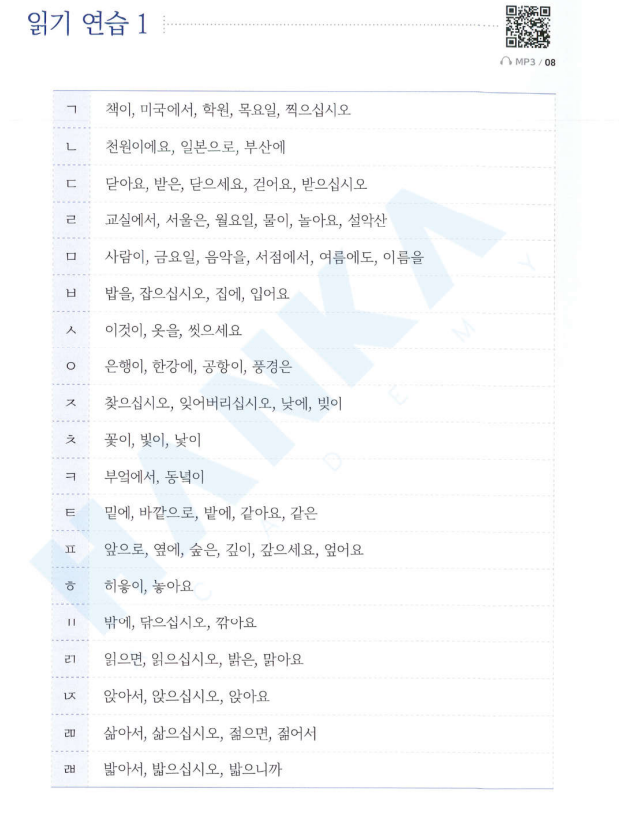

Patchim + nguyên âm → patchim “chuyển sang” âm tiết sau
Hàn Ngữ Nari · Bấm → hoặc vuốt để sang trang
âm nhạc
sách
hoa
👉 Viết một kiểu, đọc một kiểu. Vì sao?
ㅇ đứng đầu âm tiết là “ghế trống” (không có âm) → patchim phía trước “ngồi vào” chỗ đó.
ㄹ nối sang đọc là [r] (bật lưỡi nhẹ), không phải [l]:
Đứng cuối, nhiều patchim chỉ đọc thành 7 âm [ㄱ ㄴ ㄷ ㄹ ㅁ ㅂ ㅇ]. Nhưng khi nối sang nguyên âm, chúng “hiện nguyên hình”:
| Đứng một mình | Nối âm |
| 꽃 [꼳] | 꽃이 [꼬치] — ㅊ |
| 밭 [받] | 밭에 [바테] — ㅌ |
| 부엌 [부억] | 부엌에서 [부어케서] — ㅋ |
| 앞 [압] | 앞으로 [아프로] — ㅍ |
| 낮 [낟] | 낮에 [나제] — ㅈ |
ㅇ cuối là âm [ng], giữ nguyên, nối mềm sang nguyên âm sau.
ㅎ gặp nguyên âm thì biến mất.
Bấm từng số để nghe từng câu. Nghe 2 lần → đọc theo → viết lại bằng tiếng Hàn và đánh dấu chỗ nối âm.
① Patchim + ㅇ → chuyển sang
책이 [채기] · 꽃이 [꼬치] (đọc âm gốc)
② ㅇ đứng yên · ㅎ câm
은행이 [은행이] · 놓아요 [노아요]
③ ㄲ ㅆ chuyển cả cặp
밖에 [바께] · 있어요 [이써요]
④ Patchim đôi: chữ sau chuyển
읽으면 [일그면] · 앉아요 [안자요]
